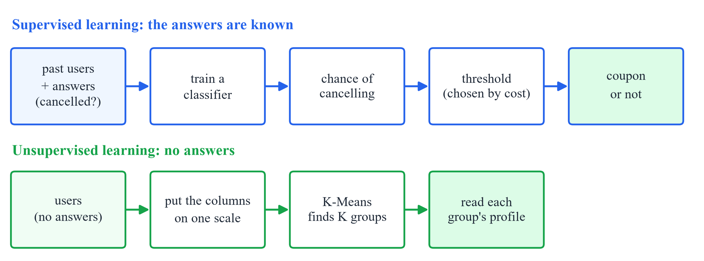
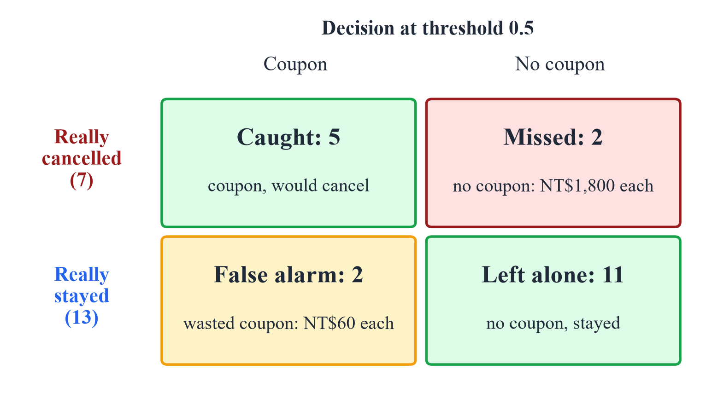
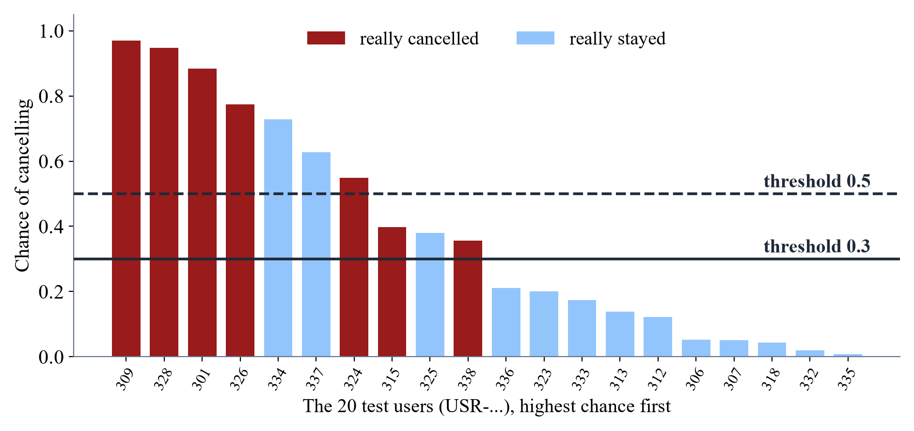
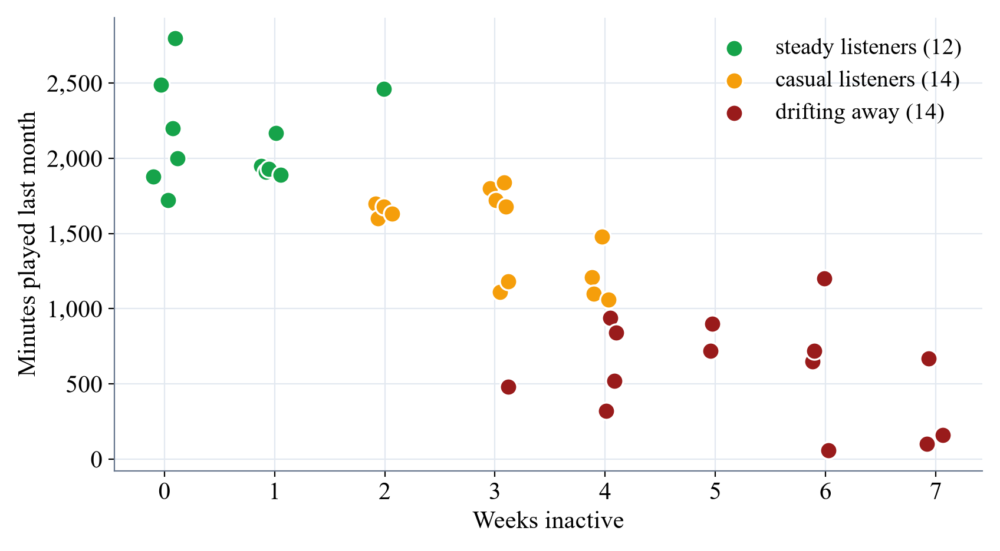
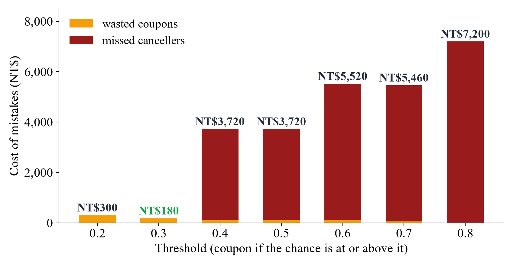

Today: the result first, then the classifier and K-Means
| Threshold | Missed | False alarms | Cost |
|---|---|---|---|
| 0.5 (default) | 2 of 7 | 2 | NT$3,720 |
| 0.3 (by cost) | 0 of 7 | 3 | NT$180 |
1. Coupon at a chance of 0.3 or more: a miss costs 30 times a coupon.
2. 80% accurate, yet 2 of 7 cancellers missed: look at recall and cost.
3. K-Means finds steady (0% cancel), casual (29%), and drifting (79%) listeners.

| Coupon | No coupon | |
|---|---|---|
| Cancelled | TP: caught | FN: missed (NT$1,800) |
| Stayed | FP: false alarm (NT$60) | TN: left alone |
| Score | Formula | Question |
|---|---|---|
| Accuracy | (TP+TN) / all | share of decisions right? |
| Precision | TP / (TP+FP) | coupons that went to real cancellers? |
| Recall | TP / (TP+FN) | cancellers we caught? |
session_03_04_dataset.csv: 40 music app users, one row per user; 15 cancelledUser_ID (label), Weeks_Inactive_Count (0-7), Monthly_Minutes_Count (60-2,800)Cancelled_Binary: 1 = cancelled the next month, 0 = stayed.venv first (Python Setup Clinic).# 1. Input: 40 users; half train the model, half test it import pandas as pd from sklearn.linear_model import LogisticRegression from sklearn.model_selection import train_test_split from sklearn.pipeline import make_pipeline from sklearn.preprocessing import StandardScaler df = pd.read_csv("data/session_03_04_dataset.csv", index_col="User_ID") features = ["Weeks_Inactive_Count", "Monthly_Minutes_Count"] X_train, X_test, y_train, y_test = train_test_split( df[features], df["Cancelled_Binary"], test_size=0.5, random_state=42, stratify=df["Cancelled_Binary"]) # 2. Process: scale, then learn to classify; score each test user model = make_pipeline(StandardScaler(), LogisticRegression()) model.fit(X_train, y_train) chance = model.predict_proba(X_test)[:, 1] # 3. Output: the test users, highest chance of cancelling first result = pd.DataFrame({"Weeks": X_test["Weeks_Inactive_Count"], "Minutes": X_test["Monthly_Minutes_Count"], "Chance": chance.round(2), "Cancelled": y_test}) print(result.sort_values("Chance", ascending=False))
make_pipeline(StandardScaler(), LogisticRegression()): scale, then classifypredict_proba(X_test)[:, 1]: each user's chance of cancellingQuick Check: model.predict(X_test).sum() gives 7 coupons at 0.5
1; heavy recent listeners: near 0USR-334 (0.73) and USR-337 (0.63) stayedUSR-315 (0.40) and USR-338 (0.36) cancelledpredict_proba(). Keep [:, 1], the chance of cancelling.# 1. Input: the same users, split, and model as Step 1 import pandas as pd from sklearn.linear_model import LogisticRegression from sklearn.model_selection import train_test_split from sklearn.pipeline import make_pipeline from sklearn.preprocessing import StandardScaler from sklearn.metrics import confusion_matrix from sklearn.metrics import accuracy_score, precision_score, recall_score df = pd.read_csv("data/session_03_04_dataset.csv", index_col="User_ID") features = ["Weeks_Inactive_Count", "Monthly_Minutes_Count"] X_train, X_test, y_train, y_test = train_test_split( df[features], df["Cancelled_Binary"], test_size=0.5, random_state=42, stratify=df["Cancelled_Binary"]) model = make_pipeline(StandardScaler(), LogisticRegression()).fit(X_train, y_train) chance = model.predict_proba(X_test)[:, 1] # 2. Process: send a coupon when the chance is 0.5 or more, then count the 4 cases coupon = (chance >= 0.5).astype(int) tn, fp, fn, tp = confusion_matrix(y_test, coupon).ravel() # 3. Output: the four cases and three scores print(f"Caught: {tp} | False alarms: {fp} | Missed: {fn} | Left alone: {tn}") print(f"Accuracy: {accuracy_score(y_test, coupon):.2f}") print(f"Precision: {precision_score(y_test, coupon):.2f}") print(f"Recall: {recall_score(y_test, coupon):.2f}")
chance >= 0.5: coupon or not, as 1 / 0confusion_matrix(...).ravel(): TN, FP, FN, TP in that orderQuick Check: "never send" is 0.65 accurate with recall 0

0.80: 16 of 20 decisions right0.71: 5 of 7 coupons went to real cancellers0.71: 5 of 7 cancellers caught; 2 missed (NT$1,800 each)
| Rule | Accuracy | Recall | Cost of mistakes |
|---|---|---|---|
| Never send a coupon | 0.65 | 0.00 | NT$12,600 |
Model, threshold 0.5 | 0.80 | 0.71 | NT$3,720 |
Model, threshold 0.3 | 0.85 | 1.00 | NT$180 |
# 1. Input: all 40 users; the answer column is not used to find the groups import pandas as pd from sklearn.cluster import KMeans from sklearn.preprocessing import StandardScaler df = pd.read_csv("data/session_03_04_dataset.csv", index_col="User_ID") features = ["Weeks_Inactive_Count", "Monthly_Minutes_Count"] # 2. Process: put both columns on one scale, then find 3 groups of similar users scaled = StandardScaler().fit_transform(df[features]) kmeans = KMeans(n_clusters=3, random_state=42, n_init=10) df["Group"] = kmeans.fit_predict(scaled) # 3. Output: a profile of each group; the cancel rate only helps us read them profile = df.groupby("Group").agg( Users=("Cancelled_Binary", "size"), Weeks=("Weeks_Inactive_Count", "mean"), Minutes=("Monthly_Minutes_Count", "mean"), Cancel_Rate=("Cancelled_Binary", "mean")) print(profile.round(2))
KMeans(n_clusters=3); .fit_predict() gives each user a groupQuick Check: n_clusters=2: two groups of 20 (75% and 0% cancelled)


Goal: put a price on each kind of mistake at threshold 0.5
Script: YourName_S34_cost.py
3,600 + NT$120 = NT$3,720: the threshold should go downGoal: try thresholds 0.2 to 0.8 and keep the cheapest
Script: YourName_S34_threshold.py
[0.2, 0.3, ..., 0.8]; print caught, missed, false alarms, costconfusion_matrix(y_test, chance) stops with a ValueError: ask the AI Chat about "continuous"0.3: NT$180, recall 1.00Goal: compare weeks only, minutes only, and both with ROC-AUC and with the lowest cost
Script: YourName_S34_compare.py
roc_auc_score(y_test, chance): how well the chances rank cancellers above stayers0.934); cheapest: both (NT$180)